Dark Souls is all about exploring, discovering an amazing world, and learning from your mistakes.
It's a shame that so many people simply see it as an "impossibly difficult game", when in fact, it doesn't
even hold up to some of the more difficult games of this last decade.
Many players simply get too
frustrated with the game during its first few hours, drop their controllers, and vow to never
touch the game again. Just because Dark Souls asks the player to learn from failing, doesn't
make the game impossible, and I hope to help players get far enough into the game to
discover this for themselves.
This walkthrough's intention is not to take away the experience
of discovery from new players, but rather to show them what the game can be and hopefully give
them a big enough push to be able to play the game by themselves after this short walkthrough.
I'll be covering up to and including the first two bosses, as this is where most players tend to
quit before really trying the game out fully. If you don't know if you'll need help, I'd
recommend trying the game out before reading this walkthrough, as it would be best if you could
have as much of that "first time" experience as possible. If you can persevere, I promise it will
be a rewarding experience.
Northern Undead Asylum
You start in an empty cell. Pick up the key from the corpse in the middle of room and use it to
open the door. Walk down the long hallway and take a right in the next room (these enemies
are optional and pose no threat to you). You'll find yourself at a
ladder. Climb up the ladder into the courtyard.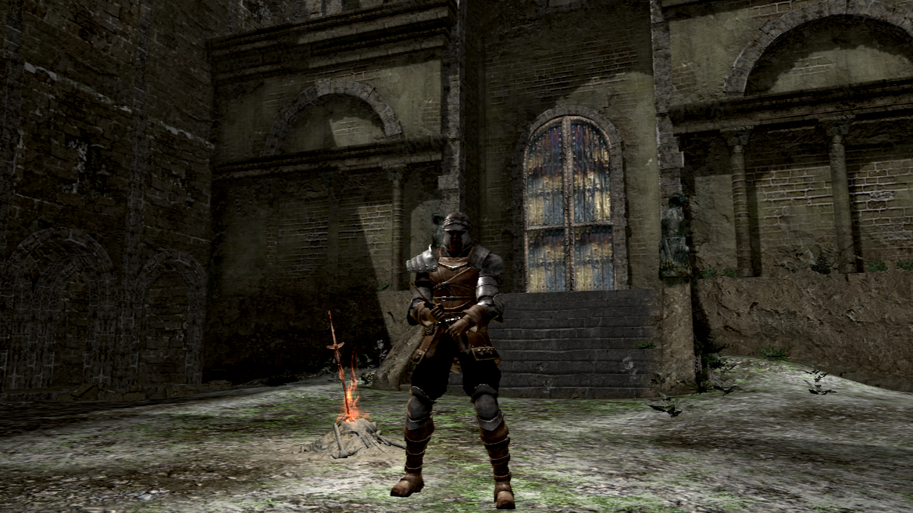 This is your first bonfire. Rest at it to use it as a checkpoint.
Now for your first boss, kind of. Open the massive door in the courtyard. Move forward until a giant demon jumps down
to meet you. Now, immediately bolt to the left. There will be an open door on the left with a bonfire inside.
Rest at the bonfire and proceed down the path towards the other side of the room. An archer will begin shooting at you,
so take cover in the small room on the left. Here is where you pick up your character's shield. Use it to deflect
the archer's arrows until you reach the spot where he was standing and pick up the item on the ground. This is your
character's starting weapon. Now follow the archer into the left hallway and finish him off.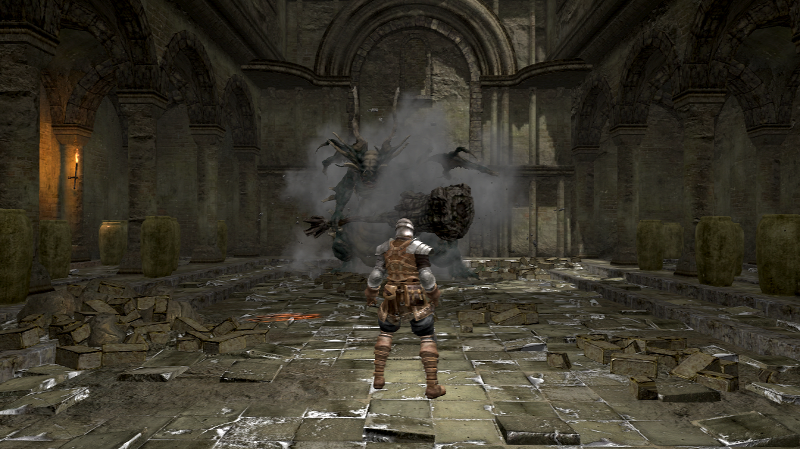 Proceed through the fog door.
You are now above the courtyard. Facing the rail, take a right until you reach the wall and then look left. There are two sets of stairs.
Above the stairs on the left is boulder ready to come down on you. Walk up slowly, and then dodge to the right as soon as you
hear it coming. Follow where the boulder made a hole in the wall and talk to the knight sitting on the ground. He offers
you the all-important estus flask. Now, walk down the stairs on the right and open the door at the bottom. You now have a
shortcut that starts right next to that first bonfire. You may rest at it if you need to.
Proceed up the first flight of stairs and
then up the second flight of stairs that the boulder came from. There should be an undead waiting at the top. After killing him, proceed through
the gate. In front of you is a ledge. When you reach the ledge, two hollows will charge at you from the left and a third
one will try to shoot at you from a distance. Take a few steps back so that you can't be shot at and dispatch the two undead. Now go and
finish off the archer. The boss is inside of the fog door on your left, but there is one more enemy in the next room.
This enemy is tougher than the other hollows, but is completely optional and offers no reward.
When you're ready to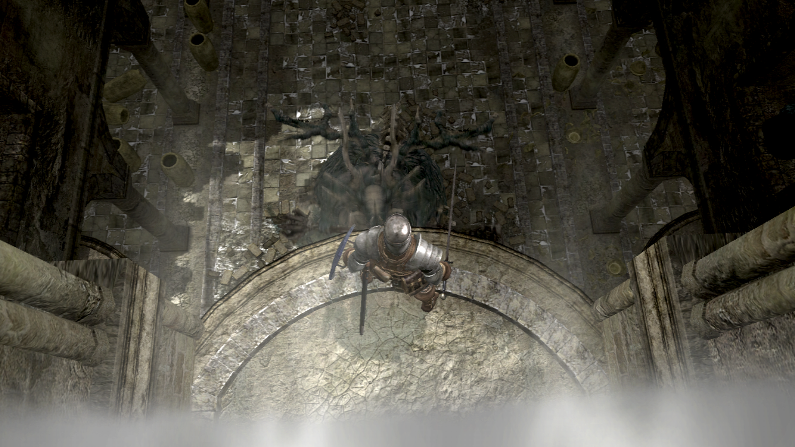
fight the boss, walk through the fog door. You'll notice that you are above the asylum demon. You need to fall down on top
of him and plunge your sword into him. (Simply use the attack button as you are falling.) Don't take too long to do this,
as he will eventually jump up and hit you. Now that you are on the ground, you need to fight him toe to toe. He turns
very slowly, so circling around and hitting his butt is the best advice for melee fighters. If he swings his club at you,
remember to roll out of the way. You can you even block his weapon with your shield if you want to. Here's video showing
how the fight should go down.
Now that the Asylum Demon is dead, use the key he drops to open the second pair of large doors. Walk forward a bit and take a left after passing the first crumbled wall. You should find a secret item here. Walk back onto the path and towards the cliff. Enjoy the cutscene.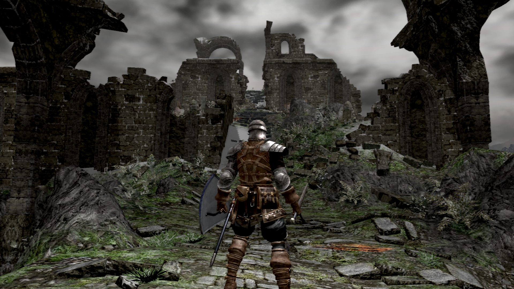
Firelink Shrine
Welcome to Firelink Shrine. You can begin by resting at the bonfire. This bonfire is already kindled, so it will bring you
up to 10 estus flasks. Inspect the body dangling over the well for 3 humanity and then talk to the armored stranger for
some interesting dialogue. Walking into and exploring the shrine is optional, but there are a few very nice items if you do.
Walk up the stairs right next to the bonfire and continue by taking the path on the right.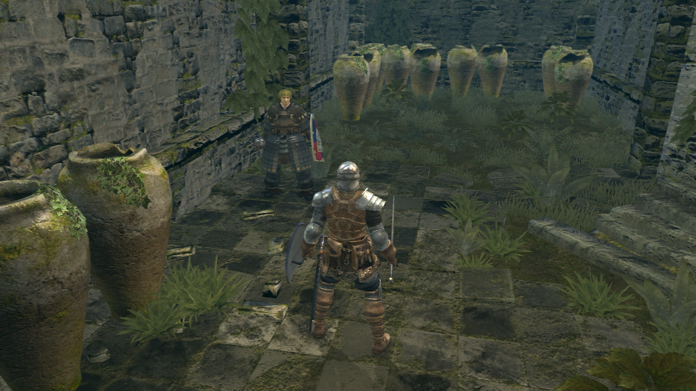 You'll meet a cleric who will
at first not want to talk to you. Keep talking to him until more dialogue options appear. From him, you can learn miracles
and join the "Way of White" covenant, which helps prevent you from being invaded.
Keep walking up the stairs until you
come across a body with souls on it. Now look behind you and slightly to the left. The ledge across the gap can be reached by
jumping. Your goal is to fall down behind the building where you will find several chests with useful items inside.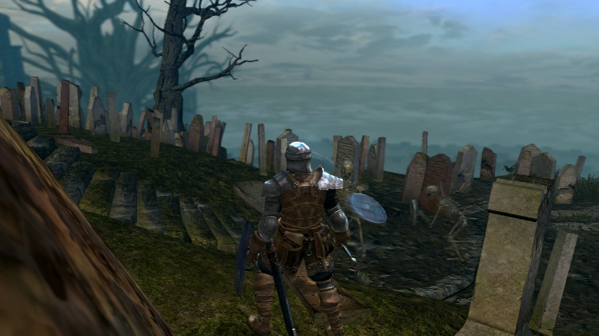
Find the way out and jump down into the graveyard. Immediately run left up the stairs, as these skeleton enemies are
too difficult for you to fight right now. Head up the second flight of stairs. You'll find yourself on top of the ruins.
Circle around the top to find an item, then drop down and rest at the bonfire where you started.
Here is where a lot of people make a mistake. There are three paths to travel from where you are standing. You can either go
back into the graveyard, where the skeletons are very hard to kill and (if you go far enough) actually don't die. You can start also
going down the stairs to find a flooded ghost town where the enemies are ghosts and you can't even hit them. The place you need to go to is the burg, which is where you're supposed to go in the story and the enemies really aren't that hard. To find the burg,
simply stand at the bonfire and stare in the direction of the well. You'll see an aqueduct and a winding path along the
cliff. Travel in this direction.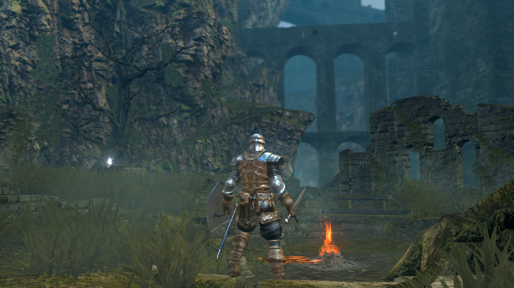
You'll soon happen upon two hollows. Kill the one nearby and wait for a third one to jump down and attack you
from above. The second one should still be standing by the cliff guarding an item. Get close enough to him
to get his attention and immediately run back to avoid getting hit by another hollow that's throwing bombs at
you from above. Kill this third hollow. Now run up the stairs and bum-rush the bomb throwing hollow. There should be one more
hollow on the left and one more on top of the stairs that will also try to engage you. Kill them all and go back down the
stairs to get the item that was being guarded.
If you're feeling confident, you can try and jump across to the aqueduct
and you will find a secret ring. When you're done, head up the stairs and collect the item on the aqueduct's ledge. Now head
inside. To your left you will find a rat. kill it and take the item it was guarding. Travel down the aqueduct and take
the exit on the left. There's an NPC at the end of this aqueduct that sells you items.
The Undead Burg
Welcome to the Undead Burg. Walk up the stairs. You'll find two hollows ready to fight you. Walk to the end of the roof you are
standing on and notice the four barrels stacked up on on the edge. Roll into them to break them and fall down to find a
secret area and an item. Drop down again and go left. Kill the hollow, then walk through the door on the left.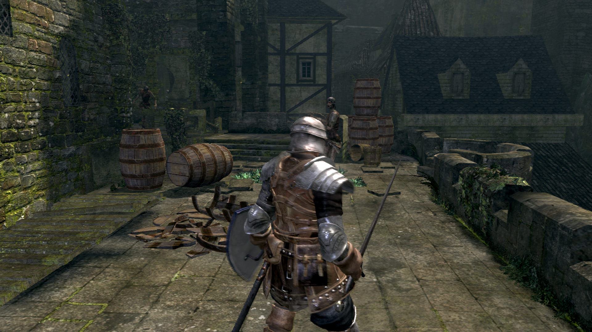 You should
find an item next to the window. Walk back out to where you came from and approach the bridge. Two hollows will pull
themselves up and attack you. Dispatch them, then walk into the room they were guarding. Walk to the right and out the
door. More hollows will pull themselves up in an attempt to ambush you. You can attack their hands to make them fall off.
Pick up the item they were guarding and climb up the nearby ladder. Turn to the right and pick up the humanity at the
end of the path. Jump down to where you were before.
Now walk to the end of the roof section and engage the hollow by the ledge.
Another hollow will come out of the building on the left. Walk through the fog door on the right and pick up the item
in the corner of the room. Now walk up the stairs and then go outside onto the wall. A small surprise awaits. After the
surprise, walk forward and engage the hollows on the roof. Kill the melee attackers first and then dispatch the pesky archer
that's been shooting at you.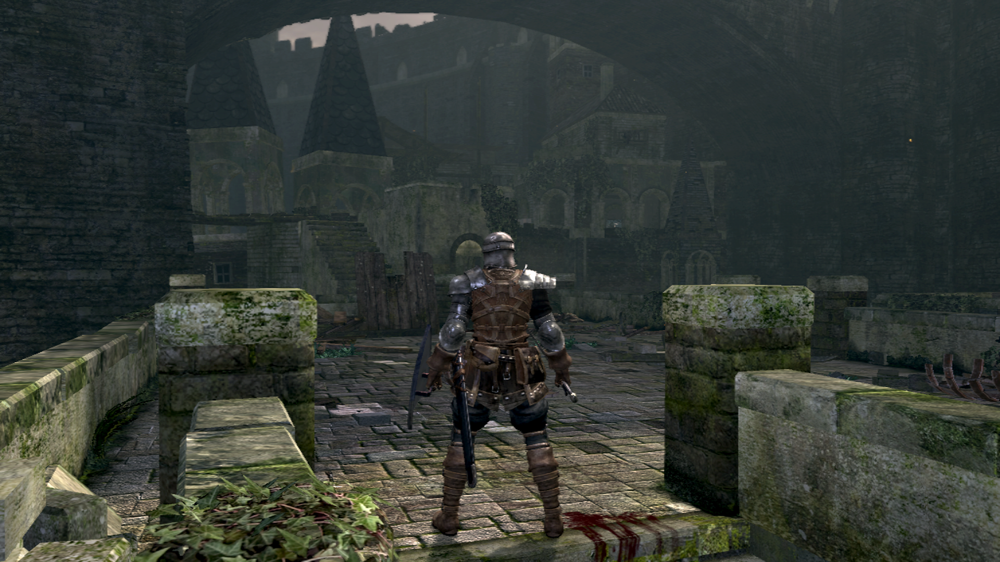 Underneath where he was standing is a door with a new shield inside.
Cross the drawbridge to the archer's left and rest at the bonfire.
Now that the enemies have respawned, kill the archer
again and walk back down to finish off the other hollows. To the left, you will find two shielded undead. These are a bit
trickier to fight, so don't let your guard down. After killing them, roll around and break up the boxes. Travel down the
now revealed stairs. While standing in the middle of this new room, a hollow will pop out of some furniture and attack you.
Kill him and walk outside to find a peaceful vendor.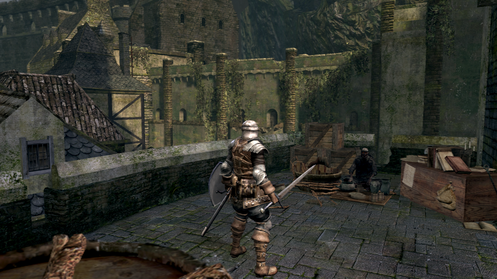 He sells a key and many nice items. Killing him gives you a nice
katana (totally optional). Walk back into the building and travel down the hallway. Walk down this path and kill the 4
weak hollows, then climb up the ladder. Pick up the knives and look down below. You'll see a broken walkway
below. You should be able to jump across onto the walkway.
Now that you're inside, walk up the stairs onto the balcony, then turn right, go around the corner, and pick up a nifty crossbow.
Go back,jump down, and head back to your bonfire to rest.
Walk outside, kill the archer again, and wait for any hollows to come up the stairs. After they're dead, go left and cross
the bridge. Hollows will throw bombs at you while you cross, so make sure to run. The room you'll end up in has three hollows
in it. Be patient and take them out one-by-one. Once they're dead, walk outside and then inside the door on the right.
There's a room in the back with a balcony. On the balcony is a hollow and an item. Further back is another room with a chest.
Once you've gotten the chest, head back outside the way you came. Take a right and go up the stairs. You'll find 3 hollows
and the one in back will throw bombs at you. Kill them and look for a ladder in the direction you came from. Climb up and
kill the hollows that had been throwing bombs at you earlier, then pick up the item on the ground.
Head back down the ladder
and enter the tower on you left to kill the archer at the top. Now head back down and notice the door. If you bought the
key from the merchant, use it and find an item on the backside of the building. If you didn't have the key, then
just go left, down the stairs, and kill the shielded hollows. If you had the key, open the chest, then drop down and kill
those same hollows.
Down below is a bonus area with an especially difficult enemy. Skip ahead if you don't want to fight him. To kill him, try
and lure him into a nice open area. He's strong but he often leaves himself open after his big swings and is easy to backstab, as shown in the combat page of this website. He usually drops some very nice weapons after killing him, but there is
also a ring he is guarding downstairs as well.
After that, head up the stairs next to the shielded hollows you killed. An undead will throw a barrel down the stairs, so
run back to avoid it and then kill the hollow. Inside the tower in front of you is a locked door. If you have the master key,
you can use it to find and kill an extremely difficult enemy; probably too difficult for you right now. You're goal now is
to travel up the tower.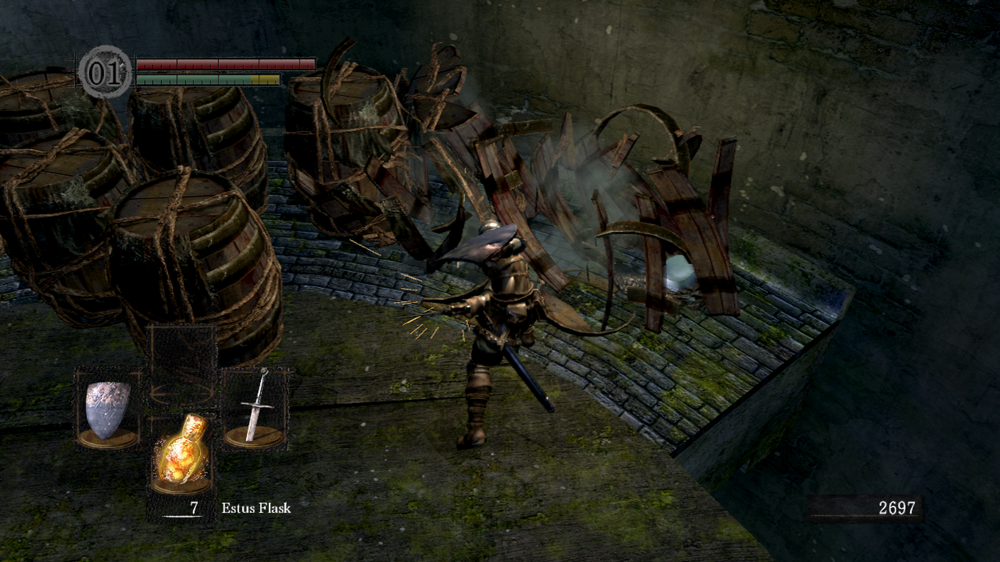 In the third story is bunch of crates lined up against the wall. If you break the crates, a crystal
lizard will pop out. Kill it quickly to get some nice items.
Now for the boss: Taurus Demon.
Once you're ready, walk through the fog gate. The battle won't start yet. Turn around and climb up the hidden ladder.
Kill the two archers skulking around up there. You'll need to come back to this spot during the fight. Jump down and
prepare to engage the boss. Walk across the wall. About half way, the demon will jump down and begin charging at you.
Immediately run back and climb up the ladder you were just on. Quickly Use your height to jump down and land a critical
strike against the boss. You can do this as many times as you like, so long as he lets you climb the ladder. On the ground,
the Taurus Demon is not too bad, though he does have a lot of health. Use spacing, and try to stay out of range until
he swings his club, then get in a hit or two before he strikes again. I've recorded footage of the fight to show how
it will normally play out.
This is as far as my walkthrough will take you. I hope you've had a good time and will continue to play this "impossibly difficult game" for as long as you enjoy it. Leave some feedback too. I'd love to hear about your Dark Souls experiences and any suggestions for improving this starter's guide. What you do next is up to you. Now don't you dare go hollow.